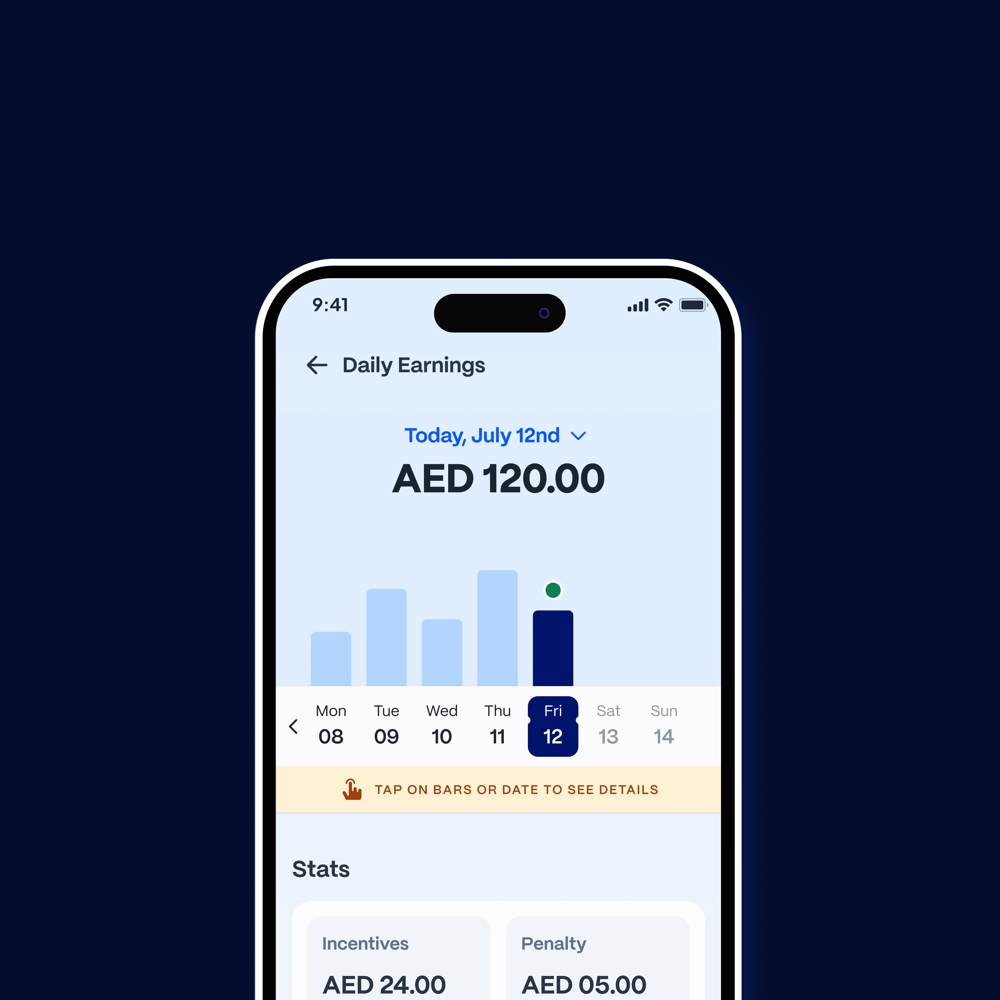
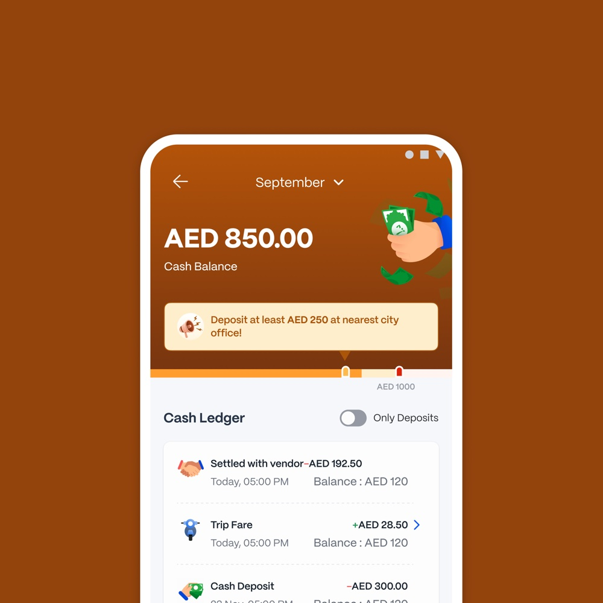

01Porter
Building a Supply-Led Growth Engine That Drove 10% of New Customer Acquisition
Built a rewards experience from scratch that motivated driver-partners and turned their participation into a new growth channel.
Read case study01 — At a glance
Mostly figuring out why things work the way they do — then trying to make them work a little better.
Current
Previously
The principles behind everything I design.
02 — Selected Work
Keep scrolling. The deck stacks itself.
Built a rewards experience from scratch that motivated driver-partners and turned their participation into a new growth channel.
Read case studySimplified a complex earnings breakdown into a clear view of where every dirham came from and where it went.
Read case study
Made it easier for partners to understand their cash position and take action before hitting the limit.
Read case study
Created a flexible routing setup that let teams change processor allocation without shipping code.
Read case studyand here’s a few quick bites…
04 — Current obsession
Where design instinct meets machine leverage: experiments, workflows and shipped things.